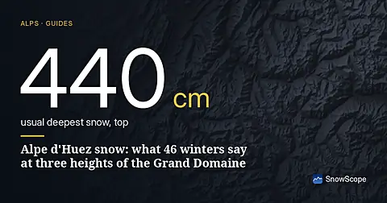

La Grave 78 centimetres: where the Alpine snowstorm concentrated
Over the past three days, one storm pulse has concentrated its heaviest accumulation above La Grave's glacial heights, producing 78 centimetres on upper slopes with 61 of those centimetres delivered in the last 72 hours. Fresh snow will continue through the next phase of the system, with another 33 centimetres forecast over the coming three days.
See the live snow forecast for La Grave in the SnowScope appSnow depth, powder alerts and the 3D map, free.
The Storm's Centre
Over the past three days, a single storm cell has concentrated its heaviest accumulation above the high glacial terrain of La Grave. This concentration reflects how Atlantic systems shed their moisture most forcefully where topography forces air upward at the steepest angle. La Grave sits at precisely such a boundary.
The numbers confirm the pattern. The resort now holds 78 centimetres on upper slopes—substantially more than any comparable site in the French Alps. Les Deux Alpes and Alpe d'Huez, both significant resorts higher up the region, stand at 52 centimetres each. This gap is not chance but physics: elevation and exposure write the snow depth distribution.
| Resort | Snow depth | New snow, 72 h | Coming, next days | Top |
|---|---|---|---|---|
| La Grave | 78 cm | 61 cm | 33 cm | 3,543 m |
| Les Deux Alpes | 52 cm | 51 cm | 30 cm | 3,511 m |
| Alpe d'Huez Grand Domaine | 52 cm | 43 cm | 31 cm | 3,306 m |
| Champorcher | 25 cm | 38 cm | 3 cm | 2,489 m |
| Orcières Merlette | 35 cm | 36 cm | 35 cm | 2,731 m |
72 Hours of Accumulation
Over the latest 72 hours through 13 November, La Grave received 61 centimetres of new snow. The heaviest single day was 12 November, with 53 centimetres falling between midnight and midnight. The day before brought 5 centimetres; yesterday added 3 centimetres. This total of 61 centimetres places La Grave well above its November average (53 centimetres for the full month historically).
The timing matters equally. This snow arrived when mid-mountain temperatures were near the boundary between rain and snow, yet the high elevations where La Grave sits remained solidly in cold air. Measured records from nearby high-altitude stations validate this picture at scale. Sonnblick, at 3,109 metres in the Austrian Alps, registered 23 centimetres of new snow on 13 November. Sulden Madritsch and Schnals Teufelsegg, both at similar elevations in South Tyrol, recorded 23 and 22 centimetres respectively. These independent measurements confirm that the storm system pushed consistent, significant accumulation across the entire Alpine chain.
What Lies Ahead
The storm system will not exhaust itself immediately. The forecast calls for 7 centimetres on 14 November, a heavier surge of 16 centimetres on 15 November, and a final 10 centimetres on 16 November. That sequence totals 33 centimetres over the next three days—a reinforcement that will test slope stability and lay down a credible foundation for the season ahead.
The freezing level will descend progressively as cold air masses follow the initial system. By 16 November, the freezing level is forecast to drop to between 2,490 and 2,690 metres—a 300-metre fall from today's 2,820–2,910 metre range. This steady cooling means fresh snow will reach lower elevations and consolidate the vertical snow-depth profile across the mountain.
Elevation and Stability
The vertical distribution of snow at La Grave tells an instructive story. The base elevation (3,196 metres) holds 66 centimetres; the summit (3,543 metres) holds 72 centimetres. This gradual increase suggests that the snowfall rates have been high enough to override wind erosion—evidence of a well-organized, sustained system rather than wind-redistributed powder.
The forecast for the coming week shows the top elevations receiving 101 centimetres of additional snow, the mid-slopes receiving 97 centimetres, and the base receiving 93 centimetres. This uniform deep loading above 3,200 metres signals that skiers working the high terrain can expect stable snow structure to build progressively, particularly where older snow has bonded correctly to the new material.
The Regional Picture
La Grave's advantage is genuine but not singular. Les Deux Alpes and Alpe d'Huez each captured 51 and 43 centimetres of new snow in 72 hours—substantial accumulations that separate them decisively from lower-altitude resorts. Orcières Merlette received 36 centimetres. This stepped gradient reflects the steering of the storm system along the western face of the main Alpine ridge, with heaviest loading concentrated on the highest, most-exposed terrain.
At the broader scale, the picture expands. The snow-covered area across the entire Alps has doubled in two days: from 39,090 square kilometres on 11 November to 76,100 square kilometres today (13 November). This rapid expansion shows how thoroughly the storm swept across the mountain chain. By 16 November, that covered area is forecast to contract slightly to 57,910 square kilometres as lower-elevation snow consolidates and peripheral snow at the rain-snow boundary begins to fade—a natural oscillation in transitional weather patterns.
Skier's Notes
Early-season snow sits on inherently unstable ground. The older snow base at La Grave is thin; the new material is fresh and reactive. The next 48 hours will reveal whether the new snow bonds properly to what lies beneath, or whether it remains a slab risk. Watch the official avalanche bulletin for guidance on higher elevations.
The 15th will be the heaviest snowfall day of the coming phase: position yourself accordingly. Most importantly, the deep accumulation from this sequence will concentrate above 3,100 metres—La Grave's true terrain. Lower elevations, though receiving snow, may still offer inadequate coverage for confident skiing.
Tips for skiers
- Track the 15 November forecast for the heaviest snowfall of the next three days (16 centimetres). Plan routes and timing accordingly, and check the avalanche bulletin that morning.
- The best reliable snow will concentrate above 3,100 metres. La Grave's base sits at 3,196 metres, which means the depth accumulating in the forecast is concentrated where it matters most for skiing.
- Early-season snow bonds to thin older deposits. Even though the total depth looks encouraging (61 centimetres in 72 hours, 33 centimetres forecast), test snow stability carefully and follow official avalanche guidance if working off-piste.
- Watch how the freezing level falls from 2,910 metres today to 2,690 metres by 16 November. That 220-metre descent means higher elevations will see solidifying snow while mid-mountain snow remains closer to the rain-snow boundary—affecting how different slopes respond.
- La Grave's elevation advantage means it captures the storm's best snow. Lower resorts receive less. If you have terrain choice over the next week, higher altitude is better.
About these numbers
Resort snow depths are the deepest snow on the resort's upper slopes from the SnowScope snow model (about 1 km, run of 13 November); they are estimates for an area, not a measurement at one point. Station values are measurements on the date shown. Forecasts can change. Always read the official avalanche bulletin before going off-piste.
Official avalanche bulletins: EAWS (Alps)
Cite this report
For research, teaching or the press: the numbers and charts are free to reuse under CC BY 4.0 with this citation.
SnowScope (2026), La Grave 78 centimetres: where the Alpine snowstorm concentrated, https://snowscope.app/blog/en/2026/11/alps-la-grave-fresh-snow-powder-alert-13-november-2026.html, accessed 2026-11-13
SnowScope (Atlas Labs). (2026, November 13). La Grave 78 centimetres: where the Alpine snowstorm concentrated. SnowScope snow reports. https://snowscope.app/blog/en/2026/11/alps-la-grave-fresh-snow-powder-alert-13-november-2026.html
BibTeX
@misc{snowscope2026alpslagravefreshsnowpowd,
author = {{SnowScope (Atlas Labs)}},
title = {La Grave 78 centimetres: where the Alpine snowstorm concentrated},
year = {2026},
month = nov,
howpublished = {\url{https://snowscope.app/blog/en/2026/11/alps-la-grave-fresh-snow-powder-alert-13-november-2026.html}},
note = {Published 2026-11-13 10:58 UTC; accessed 2026-11-13}
}· CC BY 4.0 · Methods, data and tools →
La Grave: snow and temperature by height, this winter vs last (tools) →
Follow La Grave
Free: a message when fresh snow is coming, and the forecast every morning.
More snow reports

Alpe d'Huez faces the sun. How to plan a day by the clock and by height, with the snow of 46 past winters from the low villages to Pic Blanc.

Orcières Merlette leads the Alps forecast with 36 cm of new snow in the next three days, mostly on November 9–10, based on data from November 7.

Alpe d'Huez Grand Domaine month by month: usual snow depth at the base, mid-mountain and the Pic Blanc from 46 past winters, the safe weeks, the weak Decembers and the trend.